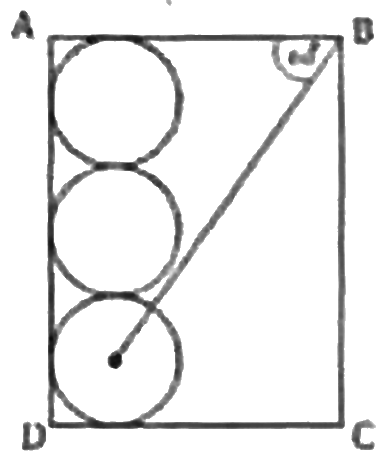
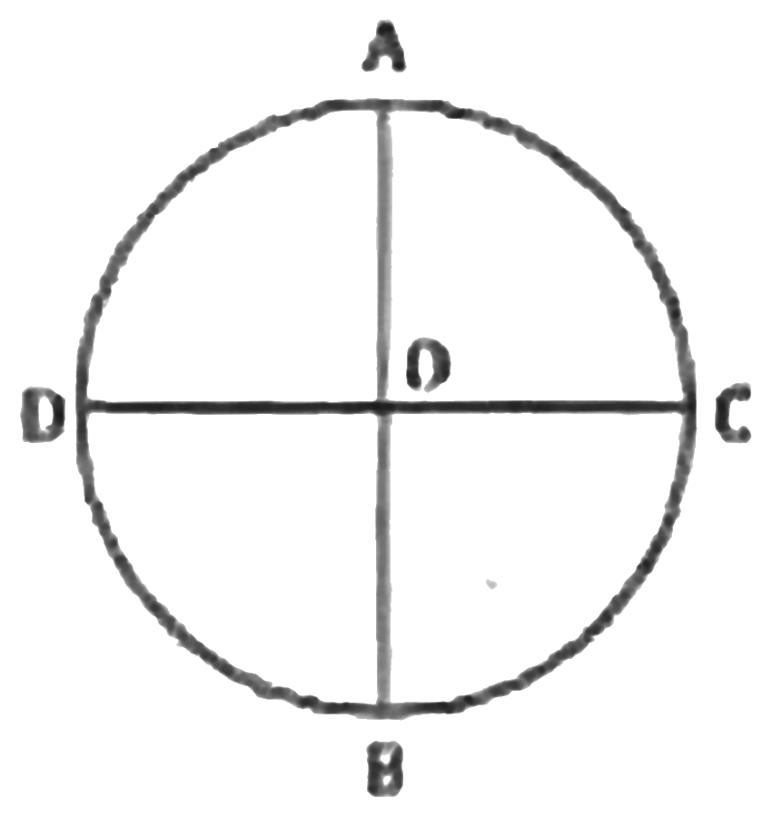

8ˣ − 4⁻ˣ = ?

בסרטוט שלפניכם משולש ABC. D נקודה על הצלע AC. נתון: BD = 2BE.
על נתונים אלו ונתוני הסרטוט, השטח האפורשטח משולש ABC = ?
נתון: |a² + b²| = 2ab
מה מהבאים נכון בהכרח?
⚠ לעידו קובייה (גוף תלת־ממדי) הוגנת בעלת 12 פאות זהות. עידו צבע את כל פאות הקובייה באחד מ־3 צבעים – ירוק, כחול ואדום. ידוע:
• ישנה לפחות פאה אחת מכל צבע.
• הסיכוי שבזריקת הקובייה תתקבל פאה ירוקה גדול פי 2 מהסיכוי שתתקבל פאה אדומה.
מה מהבאים לא יתכן?
לאיזה מהביטויים הבאים יש את הערך הגדול ביותר?
⚠ סדרי השורשים (המספרים הקטנים) לא קריאים בסרטון – אלה הסדרים הסבירים לפי המספרים (243=3⁵, 81=3⁴, 128=2⁷, 64=2⁶). יש לבדוק בספר.

בסרטוט שלפניכם ABCD מלבן. בתוך המלבן חסומים שלושה מעגלים חופפים שרדיוסם r ס"מ. המעגלים משיקים זה לזה ומשיקים למלבן.
לפי נתונים אלו והנתונים שבסרטוט, מה שטחו של המלבן ABCD (בסמ"ר)?
נתון: ᵃ√8 · ᵃ√8 · ᵃ√8 = 2ᵃ , a ≠ 0
מה מהבאים יכול להיות ערכו של a?

בסרטוט שלפניכם מעגל שמרכזו O בו הועברו שני קטרים (AB ו־CD) המאונכים זה לזה.
בכמה דרכים שונות ניתן להגיע מנקודה A לנקודה B אם ידוע כי אסור לעבור באותה הנקודה פעמיים?
איזו מהטענות הבאות נכונה בהכרח?

בסרטוט שלפניכם משושה משוכלל ומשולש שווה צלעות המתלכדים בשלושה קודקודים. נתון: שטחו של המשושה המשוכלל הוא √108 סמ"ר.
מה אורך צלעו של המשולש שווה הצלעות החסום במשושה (בס"מ)?